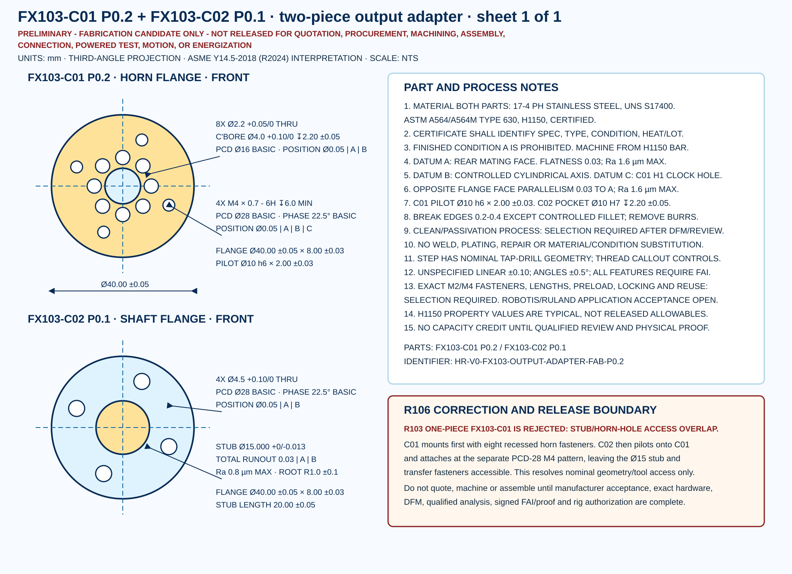

Old nominal hole/stub overlap that invalidates the R103 one-piece part.
Defect found in R103
The proposed Ø15 stub radius was 7.5 mm while the HN12 hole centers are only 8 mm from the axis. A Ø2.2 hole therefore intruded 0.6 mm into the stub envelope, and even a nominal Ø3.8 M2 head would intrude 1.4 mm. Straight screw and driver access was impossible. The one-piece geometry is rejected.
Controlled correction
FX103-C01 P0.2 is a horn flange installed first through eight recessed PCD-16 holes. FX103-C02 P0.1 is a separate piloted shaft flange attached by four M4 transfer screws on PCD 28. The Ø15 shaft remains clear of the transfer-head envelope and matches Ruland's published +0/-0.013 mm shaft recommendation.
Inspect the exact candidate
Gold is the exact ROBOTIS HN12 horn. Yellow is C01. Sky blue is C02. Gray is the first Ruland hub envelope. The hub placement is a nominal catalog-envelope layout; controlled STEP parts remain unreleased candidates.
Dimensioned drawing
On narrow screens, scroll horizontally; the control view is not shrunk below its 12-pixel annotation floor.

Geometry and load-path screens
New nominal C01 pilot-to-M2-head radial clearance using a Ø3.8 review envelope.
New nominal C02 stub-to-M4-head radial clearance using a Ø7 review envelope.
Nominal 7.9 N·m torsional shear at the minimum 14.987 mm shaft diameter; not an allowable check.
Evidence state
| Subject | R106 state | Still required |
|---|---|---|
| Part material and nominal geometry | Defined candidate | Material certificate, DFM and qualified approval. |
| Horn and transfer feature controls | Defined candidate | Exact fasteners, engagement, preload, locking and manufacturer acceptance. |
| Stub fit and runout | Defined candidate | Ruland application acceptance, FAI and assembled metrology. |
| Static arithmetic | Screened | Joint slip, fatigue, horn/serration, thread and proof analysis. |
| Fabrication and powered work | Prohibited | Every release flag remains false. |
Release boundary
This is not a machining or assembly release.
ROBOTIS, Ruland and Magtrol application acceptance; exact screws; DFM; certified stock; independent calculation review; signed FAI; proof; alignment; guard/catch; brake controls; instrumentation; anchoring; and qualified powered-work authorization remain open.
Evidence files
Design record · Feature register · Analysis register · Inspection plan · Hold register